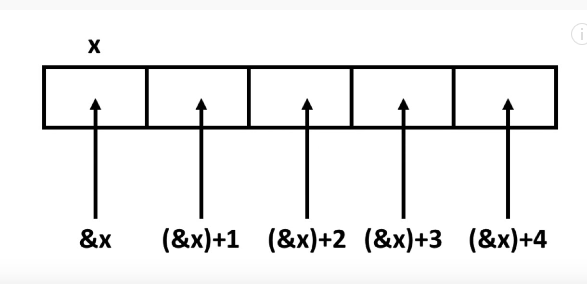
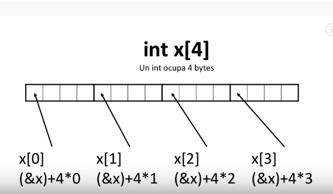

C: Es un lenguaje de programación imperativo, además de tener la característica de ser un lenguaje procedimental.
Antes de nada:
Instrucciones:
- Asignación: Guarda un valor en la memoria temporal.
- Condicionales: A partir de una condición ejecuta uas instrucciones o no.
- Bucles: El programa repite uan serie de instrucciones un número de veces o hasta que una condición se cumpla.
- Llamadas: Una función invoca a otra función. El flujo de instrucciones pasa a otra zona del código.
Funciones.
Conjunto de instrucciones que hace una operación. Tiene entradas y salidas.
IMPORTANTE: La función más importante main(): Las instrucciones, funciones y procedimientos dentro de la función main() son la función que
el compilador buscará para ejecutar el programa creado.
#include <stdio.h> /* Archivo de cabecera para cargar la definición de 'printf()'. */
int main(){
printf("Hola chunche95!");
return 0;
}
Tipos
Int - Tipos de enteros.
| short | 16 bits |
| int | 32 bits |
| long | 64 bits |
| unsigned | Variable sin signo |
- char - Para los de tipo carácter.
- float - Son números con coma flotante, es decir, los decimales, se indican con el símbolo '.' para indicar su 'coma flotante'.
- string - Indican cadenas de caracteres.
-
Procedimiento: Ejecuta código.
void Se ejecuta sin devolver valor.
#include <stdio.h>
int main(){
/* Declaración de las variables */
char x;
int y;
/* Asignación de valores a las variables definidas */
x='c'; /* Al ser de tipo char se indican con comillas simples. */
y=20;
/* Definición de variable 'z' y expresión que realiza dicha variable */
int z= y*2;
/* ******************************************** */
/* RESULTADOS */
/* ******************************************** */
printf("Hola %c , su número es: %d .", x,y); // Imprime 'Hola c, su número es: 20 .'
return 0;
}
Procedimiento void.
Ejemplo:
#include <stdio.h>
/* Procedimiento imprimir_datos() */
void imprimir_datos(int edad, char* nombre){
printf("Hola %s , tiene %d",nombre,edad);
}
/* Funcion principal */
int main(){
imprimir_datos(20,"Pepe");
return 0;
}
Condicionales y operadores lógicos.
Condicionales.
Tenemos dos tipos:
-
if-else o el if-else if-else. Para condicionales simples
-
switch-case. Para condicionales con varias condiciones.
Operadores lógicos.
| && | 'Y' |
| || | 'Ó' |
| () | Crear expresiones |
| ! | Negación de una expresión o valor - Significaría un 'falso' o el inverso de un valor. |
#include <stdio.h>
int main(){
int numero=20;
if(numero==10){
printf("El número es: %d", numero);
}else if( numero == 20){
printf("El número es: %d", numero);
}else{
printf("El número es: %d", numero);
}
return 0;
}
#include <stdio.h>
void imprimir_datos(int numero_dia){
switch(numero_dia){
case 1: printf("Lunes"); break;
case 2: printf("Martes"); break;
case 3: printf("Miercoles"); break;
case 4: printf("Jueves"); break;
case 5: printf("Viernes"); break;
case 6: printf("Sabado"); break;
case 7: printf("Domingo"); break;
default: printf("Valor inválido! \n"); break;
}
}
int main(){
imprimir_dia(2); // Valor asignado a Martes
return 0;
}
Bucles
Tenemos los bucles:
- while
- do-while
- for
#include <stdio.h>
int main(){
int k = 10;
while ( k < 20 ){
printf("k vale %d \n",k);
k++;
}
printf("Salimos del bucle.");
return 0;
}
#include <stdio.h>
int main(){
int k = 10;
do{
printf("k vale: %d ", k);
k++;
}while(k < 20);
printf("Salimos del bucle.");
return 0;
}
Ejemplo:
#include <stdio.h>
// While
void probarBucleWhile(){
int k = 20;
printf("- Inicio \n");
while(k < 20 ){ //ESTA CONDICION NUNCA ES VERDAD
printf("- Iteración del bucle while. \n");
}
printf(" - Fin \n");
}
// Do-While
void probarBucleDoWhile(){
int j=20;
printf("- Inicio \n");
do{
printf("- Iteraición del bucle do-while \n");
}while(j < 20); //ESTA CONDICION NUNCA ES VERDAD
printf("- Fin \n");
}
int main(){
printf("While");
probarBucleWhile();
printf("Do-While");
probarBucleDoWhile();
printf("Salimos del programa.");
return 0;
}
for (inicialización; condición; Iteración){ /* Código */ }La parte del código se ejecuta sólo si se realizan los siguientes pasos:
- Ejecutar "inicialización"
- Evaluar "condición". Si no se cumple → Fin.
- Ejecutar el código del bucle.
- Ejecutar "iteración".
- Volver al paso 2.
#include <stdio.h>
int main(){
int i;
for( i=0; i < 5 ; i++){
printf("Vuelta: %d \n", i);
}
printf("Salimos del bucle");
return 0;
}
Punteros.
Cuando almacenamos en memoria una variable, la celda de la memoria, necesitaremos saber la dirección de esa posición de variable.
Los punteros nos ayudan a recuperar el número de celda y escribir sobre ella.
Para crear un puntero debemos indicar el tipo de dato seguido de un '*' y el nombre del puntero y asignacion de la direccion de memoria de 'x' con '&x'.
Ejemplo:
#include <stdio.h>
int main(){
int x = 10;
prinf("x = %d \n", x);
int* dirX = &x; // Creamos un puntero con el valor de la variable de 'x'.
/* Para indicar la posición en memoria de la variable 'x' tenemos que: */
printf("Dirección de memoria de x = %u \n", &x); // Placeolder de direccion de la variable 'x'.
// Con los de tipo float sería:
float y=0.5;
float* dirY = &y;
}
-
Trabajar con referencias en funciones.
#include <stdio.h>
void jugar(int n){
n=(n+3)*2-1;
printf("%d\n",n); // Opera con la copia de la variable 'n'. 25
}
int main(){
int x=10;
jugar(x);
printf("%d\n",x); // Imprime la variable x con su valor original. 10
return 0;
}
#include <stdio.h>
void jugar(int* n){
int y = *n; // Recupera el valor del puntero, y=10.
y=(y+2)/2+2-(3*y);
// printf("%d\n",y); // Opera con la copia de la variable 'y'. -22
*n=y;
}
int main(){
int x=10;
jugar(&x);
printf("%d\n",x); // Modifica el valor de la direccion de memoria
// donde estaba ubicada la 'x'.
return 0;
}
Arrays y VLAs
Estructurar datos, forma de organizar datos en formas contiguas de memorias.
#include <stdio.h>
int main(){
int edades[10]; // Array de 10 posiciones contiguas.
edades[2]=15;
int edadesTotales=edades[2] + edades[3];
}
Para ello inicializamos las variables con los inline initialization.
#include <stdio.h>
int main(){
int edades[8]={1,2,3,4,5,2,2,9};
}
#include <stdio.h>
int main(){
itn i, edades[8];
for ( i=0; i < 8; i++){
printf("Introduzca la edad %d ", i+1);
scanf("%d", &edades[i]);
}
for ( i = 0 ; i < 8 ; i++ ){
pritnf("Edades[%d] = %d \n", i, edades[i]);
}
return 0;
}
#include <stdio.h>
int main(){
int tam;
printf("¿Cuántas edades vas a registrar? ");
scanf("%d", &tam);
int i,edades[tam];
for ( i=0; i < tam ; i++){
printf("Introduzca la edad %d: ", i+1);
scanf("%d", &edades[i]);
}
for ( i=0; i < tam; i++){
printf("Edades[%d] = %d \n", i , edades(i));
}
retunrn 0;
}
Los punteros son espacios de memoria que guardan el valor de una variable en dicho espacio, los VLA's son definición de variables de una lista que usan un espacio en memoria del ordenador, todos estos valores van encadenador. Ver imagen inferior.


Cuando usamos una función aparte, la declaración del array se hace de manera distinta. Para ello, primero definimos el array, sin decirle el tamaño dentro de los corchetes, seguidamente, tendremos una variable auxiliar que indica el tamaño del array. Ejemplo:
<stdio.h>
float media(int* edades, int tamano){
int i;
float vuelta = 0;
for ( i = 0 ; i < tamano ; i++ ){
vuelta += edades[i];
}
return vuelta/tamano;
}
int main(){
int tam;
printf("¿Cuántas edades vas a registrar? ");
scanf("%d", &tam);
int i,edades[tam];
for ( i=0; i < tam ; i++){
printf("Introduzca la edad %d: ", i+1);
scanf("%d", &edades[i]);
}
for ( i=0; i < tam; i++){
printf("Edades[%d] = %d \n", i , edades(i));
}
retunrn 0;
}
Estructuras.
Estructuras sirven para agrupar datos del mismo tipo bajo un mismo identificador.
#include <stdio.h>
#include <string.h>
// Declaracion de la estructura.
struct cuenta{
//variables
char nombre[30];
char apellidos[40];
int identificador;
int saldo;
};
void imprimir_datos(struct cuenta c){
printf("El cliente %s %s tiene %d euros en la cuenta.\n",
c.nombre,c.apellido,c.saldo);
}
int main(){
struct cuenta c1;
// Definición de mi cuenta c1.
strcpy(c1.nombre,"Juan");
strcpy(c1.apellido, "Sanchez");
c1.identificador=123;
c1.saldo=400;
//Imprimimos los datos de cuenta
imprimir_datos(c1);
return 0;
}
#include <stdio.h>
#include <string.h>
// Declaracion de la estructura.
struct cuenta{
//variables
char nombre[30];
char apellidos[40];
int identificador;
int saldo;
};
void imprimir_datos(struct cuenta *c ){
printf("El cliente %s %s tiene %d euros en la cuenta.\n",
c->nombre,c->apellido,c->saldo);
}
int main(){
struct cuenta c1;
// Definición de mi cuenta c1.
strcpy(c1.nombre,"Juan");
strcpy(c1.apellido, "Sanchez");
c1.identificador=123;
c1.saldo=400;
//Imprimimos los datos de cuenta
imprimir_datos(&c1);
return 0;
}
Union,enum y typedef.
Uniones- Son como las struct pero en este caso comparten el mismo sitio en memoria.
union miUnion_t {
int entero;
float flotante;
};
int main(){
union miUnion_t u;
u.entero = 2134344;
u.flotante = 2.54E6;
printf("Entero = %d\n", u.entero);
return 0;
}
// Declaramos el enumerador.
enum diasemana{ LUNES,MARTES,MIERCOLES,JUEVES,VIERNES,SABADO,DOMINGO};
int main(){
enum diasemana dia;
dia = LUNES;
printf("%d\n", dia); // Sale 0.
dia == VIERNES;
printf("%d\n",dia );
return 0;
}
// Declaramos el enumerador.
enum diasemana{ LUNES = 1 ,MARTES,MIERCOLES,JUEVES,VIERNES,SABADO,DOMINGO};
int main(){
enum diasemana dia;
dia = LUNES;
printf("%d\n", dia); // Sale 0.
dia == VIERNES;
printf("%d\n",dia );
return 0;
}
#include <stdio.h>
#include <string.h>
enum tipo_empleado { Analista, Programador };
typedef enum tipo_empleado Tipo;
typedef int entero;
struct empleado_t {
char nombre[20];
char apellidos[20];
char nif[10];
char telefono[10];
Tipo tipo;
};
typedef struct empleado_t Empleado; //'Empleado' -> Palabra reservada.
void imprimir( Empleado* empleado ){
printf("%s %s \n" empleado->nombre, empleado->apellidos);
printf("DNI: %s \n", empleado->nif);
printf("Teléfono: %s \n", empleado->telefono);
if (empleado->tipo == Analista){
printf("Este empleado es un analista. \n");
}else{
printf("Este empleado es un programador. \n");
}
}
entero main(){
Empleado empl;
strcpy(empl.nombre, "Juan", strlen("Juan")+1);
strcpy(empl.apellidos, "Alvarez Sanchez", strlen("Alvarez Sanchez")+1);
strcpy(empl.nif, "123456789z", strlen("123456789z")+1);
strcpy(empl.telefono, "914693545", strlen("914693545")+1);
imprimir(&empl);
return 0;
}
Memoria dinámica.
Guardar espacio en memoria del ordenador antes de usarlo ya que no conocemos el espacio a usar.
#include <stdio.h>
#include <stdlib.h> // Para usar la memoria dinamica tradicional.
int main(){
// Buffer que guarda los datos de tipo float -> 1000 bytes * 4.
malloc(4000 * sizeof(float)); // malloc devuelve un puntero de tipo void.
}
#include <stdio.h>
#include <stdlib.h> // Para usar la memoria dinamica tradicional.
int main(){
printf("¿Cuantos elementos desea almacenar?");
int longitud;
scanf("%d", &longitud);
float* valores = (float*) malloc(4000 * sizeof(float));
if (valores == NULL){
printf("No tiene tanta memoria \n");
return 1;
}
int i;
for ( i=0; i < longitud; i++ ){
valores[i] = 5.55E5;
}
printf("Todo está correcto. Memoria almacenada. \n");
free(valores);
return 0;
}
El preprocesador.
Es el primer programa invocado por el compilador y procesa directivas como #include, #define, #if.
Estas directivas no son específicas de C. En realidad pueden ser usadas con cualquier tipo de archivo.
El preprocesador usa 4 etapas denominadas Fases de traducción. Aunque alguna implementación puede elegir
hacer alguna o todas las fases simultáneamente, debe comportarse como si fuesen ejecutadas paso a paso.
#include <stdio.h> --> Sustituye el contenido del archivo stdio.h del sistema.
#include "MiArchivo.h" --> Extrae el contenido del archivo del usuario.
#pragma once --> para prevenir la doble inclusión, porque si se incluye más de una vez
puede causar que se intente declarar varias veces las mismas funciones o tipos de variable,
lo que va a generar un error al compilar, esto se intenta prevenir de la siguiente forma:
ifndef# __ARCHIVO_H__
#define __ARCHIVO_H__--> definir constantes, condiciones.
// declaración de funciones, etc ...
#endif
"Broma" → Archivo de preprocesador → preprocesador.h Conclusión de define:
- Definición junto con su valor indicado.
#define LIMITE 100 - Borrar definición declarada.
#undef LIMITE - Macro - Sustitución parametrizada.
#define AREA_RECTANGULO(x,y){x*y}